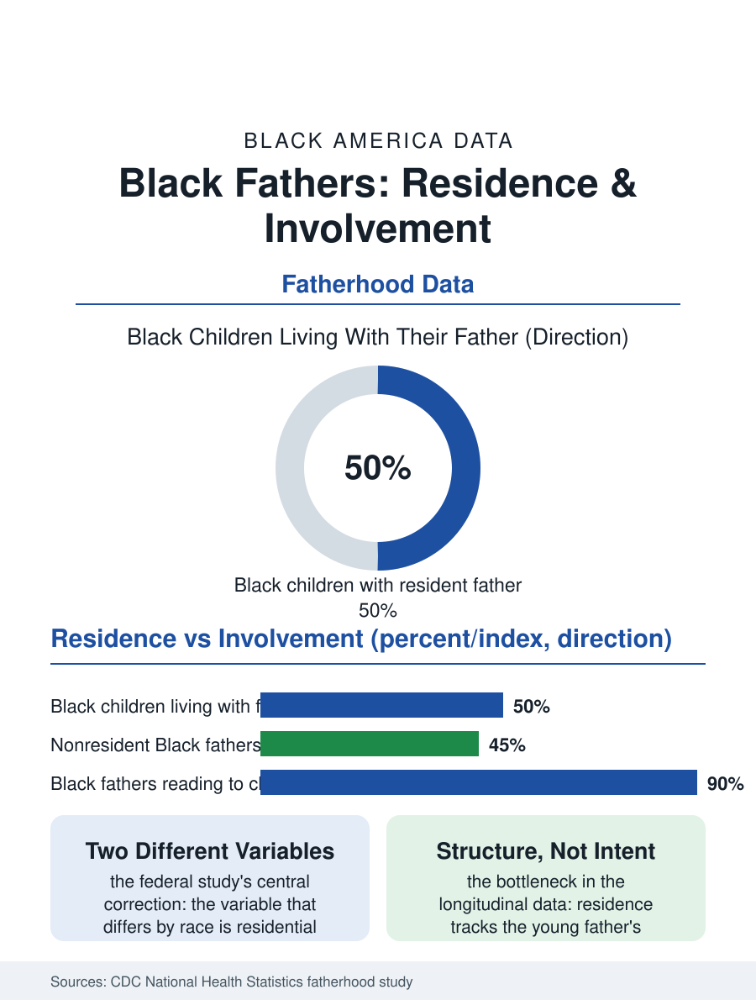

Black Census
Present: Black Fathers in the Federal Data
Half of Black children live with their father, and the other half's fathers post the nation's highest daily involvement. Residence and care are different variables. The fathers file.

Most Black children with a resident father live with him, and most Black fathers, resident or not, are involved in their children's daily lives at rates the national surveys record as equal to or higher than other groups'. The fatherhood file in the census and the federal children's surveys tells a more granular story than the absent-father shorthand: about half of Black children live with their father, and the nonresident half's fathers show the highest measured daily involvement of any group. This article reads the fathers file.
Residence and Involvement Are Different Variables
The Centers for Disease Control's fatherhood study, the most careful federal measurement of the subject, separated the two questions the public debate merges. On residence, the data confirm the family structure files: Black children are the most likely to live apart from their father, the product of the marital history, the economics, and the systems this atlas audits elsewhere. On involvement, among both resident and nonresident fathers, the study's measures, eating meals with children, bathing and dressing them, reading to them, helping with homework, put Black fathers at or near the top of every comparison, with nonresident Black fathers significantly more involved on the daily measures than nonresident fathers of other races. The finding has been replicated in its essentials by the subsequent survey literature and stands as this file's central correction: the variable that differs by race is the marital and residential structure, not the measured behavior of the fathers the structure separates from the household. The policy and cultural consequences of the distinction are the file's standing argument: interventions premised on teaching involvement to a population whose measured involvement leads the nation misread the data's actual bottleneck, which the residence side of the ledger, housing, employment, marital economics, and the family court's machinery, composes.
The Structure Behind the Residence Gap
The residence gap itself has a documented anatomy in the demographic literature. Its largest single component is the nonmarital birth share and the cohabitation instability of the parents' generation, which the family files trace to the economic position of young Black men, the marriageability analysis, and the housing and benefit structures that penalize the two-parent form at the bottom of the income distribution. The fathers the surveys find living apart are disproportionately the youngest and the poorest, their residence a lagging indicator of their labor market arrival rather than a measure of their intentions, and the longitudinal data show substantial shares of the initially nonresident becoming resident, marrying the mother or establishing the shared household, across the child's first decade, a churn the cross-sectional census snapshot flattens into a fixed picture. The multigenerational and kinship files supply the context the nuclear frame misses: the nonresident father's involvement runs through the grandmother households and the kin networks, the child circulating among households in patterns the residence question counts once. None of this dissolves the real costs the structure literature documents for children of residential instability; the file's claim is narrower and is the data's own: the costs attach to the structure, and the structure attaches to the economics, and the fathers, measured directly, are the population in the whole system whose behavior least matches its reputation.
The Record, Corrected Forward
The fathers file closes with the trend the newest data carry: the involvement measures remain at the top of the comparisons, the residence gap narrows slowly with the marital recovery the family files record at the educated end, and the fatherhood programs that work in the evaluation literature are the ones built on the data's actual diagnosis, employment, housing, co-parenting logistics, and the legal machinery of orders and arrears whose design, as the suspension and support files show, can either scaffold the nonresident father's involvement or tax it into informality. The census will keep counting residence, because residence is what a census can count, and the count will keep being misread as a count of care by everyone who stops at the headline. The file's correction stands on the federal government's own instruments: measured by what fathers do, in the daily currencies of meals and baths and books and homework, Black fathers, in the home and out of it, are not the deficit in their children's lives. They are, on the record, among the most present parents in the country, working against a structure whose other files fill this atlas. The data have said so for a decade. The file simply refuses to let the shorthand outrun them.
More in Black Census
The Black Population of the United States: Size, Definitions, and Distribution
The Black population of the United States totals 52.8 million — 15.4 percent of the nation. How the Census Bureau defines and counts the population, and where it lives.
Black Median Household Income in the United States
Black median household income stands at $56,490 in the Census Bureau's annual income report — how the figure is measured, how it compares, and what drives it.
The Black Poverty Rate: Levels, Children, and the Long Trend
The official Black poverty rate is 17.1 percent — against 11.1 percent nationally and 7.7 percent for non-Hispanic White Americans. How poverty is measured and what the data show.
Source: Centers for Disease Control and Prevention, National Center for Health Statistics fatherhood study; U.S. Census Bureau living arrangements data.